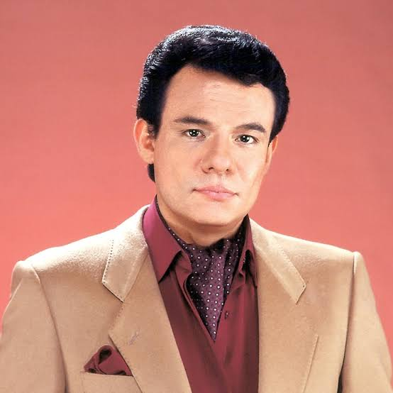

Cantantes que revolucionaron el mundo de la musica
Daddy Yankee: El Rey del Reguetón
Raymond Ayala, conocido mundialmente como Daddy Yankee, es una de las figuras más influyentes en la música urbana latina. Nacido el 3 de febrero de 1977 en San Juan, Puerto Rico, Daddy Yankee es reconocido como el "Rey del Reguetón" debido a su impacto en la popularización de este género musical a nivel global.
Desde sus inicios en la década de 1990, Daddy Yankee se destacó por su estilo innovador y su habilidad para fusionar diferentes ritmos como el hip-hop, el dancehall y la música latina. Sin embargo, fue en 2004 cuando alcanzó la fama internacional con su álbum Barrio Fino, que incluyó el icónico sencillo Gasolina. Esta canción no solo revolucionó la industria musical, sino que también marcó un antes y un después en la difusión del reguetón en mercados internacionales.
A lo largo de su carrera, Daddy Yankee ha sido un innovador constante, colaborando con artistas de diversos géneros y manteniéndose relevante en la industria durante más de dos décadas. En 2017, su colaboración con Luis Fonsi en Despacito se convirtió en una de las canciones más escuchadas de todos los tiempos, rompiendo récords de reproducciones en plataformas digitales.
En 2022, anunció su retiro de los escenarios con su último álbum Legendaddy, cerrando así una carrera llena de éxitos y dejando un impacto imborrable en la industria musical. Sin duda, Daddy Yankee seguirá siendo recordado como un pionero del reguetón y un icono de la música latina.
José Rómulo Sosa Ortiz: Él Príncipe de la Canción

José Rómulo Sosa Ortiz (Clavería, Ciudad de México, 17 de febrero de 1948-Homestead, Florida, 28 de septiembre de 2019), conocido como José José, fue un cantante y actor mexicano. Es considerado como un icono musical y popular del siglo XX,así como uno de los cantantes latinos más exitosos e importantes de la historia, logrando vender más de 100 millones de discos en todo el mundo. Su legado y trayectoria como cantante le valieron para ser apodado el Príncipe de la Canción.
Nacido en una familia de músicos, José comenzó su carrera musical en su adolescencia tocando la guitarra y cantando serenatas.Más tarde, se unió a Los PEG, un trío de jazz y bossa nova en el que cantó y tocó el bajo y el contrabajo. José encontró el éxito como solista a principios de la década de los setenta, demostrando su habilidad vocal con una impresionante interpretación de la canción «El triste» en el segundo Festival de la Canción Latina celebrado en Ciudad de México en 1970, subiendo a las listas latinas durante esos años. Habiendo alcanzado el reconocimiento como baladista, su canto obtuvo la aclamación crítica universal de sus pares musicales y medios de comunicación.
En la década de los ochenta, después de firmar con Ariola Récords, José saltó a la fama internacional como el artista número 1 de México y como uno de los artistas latinos más populares y talentosos. Con muchos éxitos internacionales, recibió 9 nominaciones Grammy y numerosos reconocimientos en todo el mundo. Agotó en lugares como Madison Square Garden y Radio City Music Hall donde se ganó el apodo de Mr. Sold Out. Su música llegó a países de habla no hispana como Japón, Israel y Rusia. También forjó una carrera como actor, protagonizando en películas como Gavilán o paloma (1985), la cual fue una cinta autobiográfica sobre su carrera, y Perdóname todo (1995).Adicional a esto, igualmente destaca su participación en la telenovela La fea más bella de 2006.
Anthony Santos: Romeo Santos
Anthony Santos (El Bronx, Nueva York, 21 de julio de 1981), conocido artísticamente como Romeo Santos, es un cantante, productor discográfico, compositor, actor estadounidense. Es considerado en la mayor parte de América como el «Rey de la Bachata» por ser el líder, vocalista y compositor principal de la agrupación Aventura.
Como miembro de Aventura, Santos ha sido una figura clave en la popularización de la bachata a nivel internacional, llevando temas al top de las listas de Billboard Latino y a listas de Europa. Tras varios discos con la agrupación Aventura, Romeo anunció su separación de la agrupación para lanzarse como solista en abril de 2011. Como solista ha lanzado 5 álbumes de estudio: Fórmula, vol. 1 (2011), Fórmula, vol. 2 (2014), Golden (2017), Utopía (2019), Fórmula, vol. 3 (2022).
Carrera
Romeo Santos nació el 21 de julio de 1981 en El Bronx, Nueva York. Su madre es puertorriqueña y su padre es dominicano. Su padre trabajaba en la construcción y su madre se quedaba en casa para cuidar a la familia.
Su nombre artístico se debe a una mención que hizo de Romeo en un extracto de la canción «Todavía me amas» del álbum We Broke the Rules, lo que generó que muchas mujeres lo llamaran "Romeo".
1993-2011: Con Aventura
Artículo principal: Aventura (banda)
aventura
Romeo Santos en 2009.
Antes de formarse Aventura, Anthony Santos cantaba junto a su primo y dos amigos en un grupo llamado "Los Tinellers de la Bachata" (hace referencia a la pronunciación de la palabra anglosajona, teenagers, que significa adolescentes), agrupación formada por Lenny y el propio Romeo a mediados de los 90, en el cual lograron sacar un disco llamado Trampa de amor. A finales de los 90, "Los Tinellers" pasaron a llamarse Aventura.
Con la banda lanzó 5 álbumes de estudio Generation Next (2000), We Broke the Rules (2002), Love & Hate (2003), God's Project (2005), The Last (2009). En febrero de 2010, dio unas declaraciones en una rueda de prensa en la República Dominicana, donde afirmó que el grupo podría separarse. Santos dejó la banda en abril de 2011 para comenzar su carrera como solista.